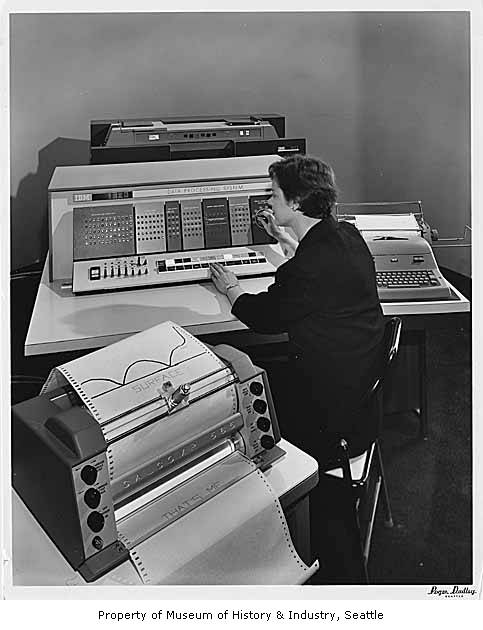
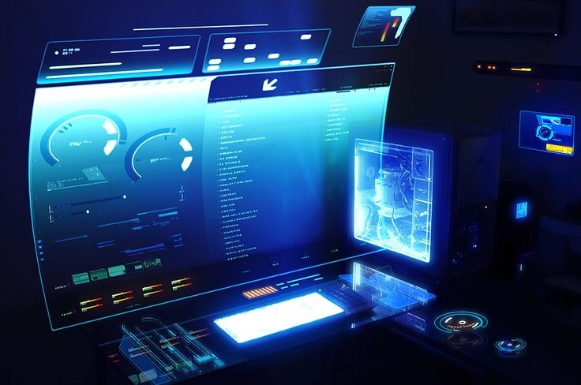

History of Computers
In the history of computers, we often refer to the advancements of modern computers as the generation of computers. We are currently on the fifth generation of computers. So let us look at the important features of these five generations of computers.

|
1st Generation
This was from the period of 1940 to 1955. This was when machine language was developed for the use of computers. They used vacuum tubes for the circuitry. For the purpose of memory, they used magnetic drums. These machines were complicated, large, and expensive. They were mostly reliant on batch operating systems and punch cards. As output and input devices, magnetic tape and paper tape were implemented. For example, ENIAC, UNIVAC-1, EDVAC, and so on. |
|---|---|
|
2nd Generation
The years 1957-1963 were referred to as the “second generation of computers” at the time. In second-generation computers, COBOL and FORTRAN are employed as assembly languages and programming languages. Here they advanced from vacuum tubes to transistors. This made the computers smaller, faster and more energy-efficient. And they advanced from binary to assembly languages. For instance, IBM 1620, IBM 7094, CDC 1604, CDC 3600, and so forth. |
 |

|
3rd Generation
The hallmark of this period (1964-1971) was the development of the integrated circuit. A single integrated circuit (IC) is made up of many transistors, which increases the power of a computer while simultaneously lowering its cost. These computers were quicker, smaller, more reliable, and less expensive than their predecessors. High-level programming languages such as FORTRON-II to IV, COBOL, and PASCAL PL/1 were utilized. For example, the IBM-360 series, the Honeywell-6000 series, and the IBM-370/168. |
|
4th Generation
The invention of the microprocessors brought along the fourth generation of computers. The years 1971-1980 were dominated by fourth generation computers. C, C++ and Java were the programming languages utilized in this generation of computers. For instance, the STAR 1000, PDP 11, CRAY-1, CRAY-X-MP, and Apple II. This was when we started producing computers for home use. |

|
|  |
5th Generation
These computers have been utilized since 1980 and continue to be used now. This is the present and the future of the computer world. The defining aspect of this generation is artificial intelligence. The use of parallel processing and superconductors are making this a reality and provide a lot of scope for the future. Fifth-generation computers use ULSI (Ultra Large Scale Integration) technology. These are the most recent and sophisticated computers. C, C++, Java,.Net, and more programming languages are used. For instance, IBM, Pentium, Desktop, Laptop, Notebook, Ultrabook, and so on. |